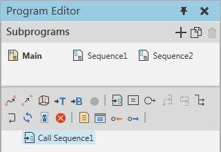

A Call Sequence statement allows a routine to branch out and execute another subroutine in a robot program.

| Name | Description |
| Routine | Defines a subroutine in robot program called by the statement.
Note: You cannot call the Main routine of a robot program as a subroutine. One option, however, is to use a Return statement to end the execution of subroutine and return the program to the routine caller. |